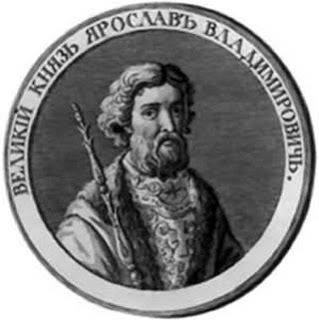

Все більше і більше розбіжностей виникає з приводу цієї легендарної споруди. Все ж безліч джерел хоч і побічно, але говорить про те, що бібліотека-таки була і просто безслідно зникнути вона теж не могла. У чому ж загадка Ярослава Мудрого?
За одними джерелами бібліотека налічувала “незчисленну кількість” книг. Говорять і сам князь Ярослав любив читати. До того ж практично всі подарунки тих часів, крім усього іншого, включали розкішні рукописні книги зі всієї Європи. Факт того, що бібліотека згоріла під час татаро-монгольської навали теж не підтверджений.
Враховуючи, що бібліотечною справою споконвіку займалися ченці, то і шукати літописи потрібно серед ченців. Прихильники однієї з версій практично достовірно впевнені, що книги досі таяться в подзмеллях Межигірського монастиря під суворою обітницею мовчання. До того ж, враховуючи особливу сприятливу атмосферу київських печер, можна тільки здогадуватися в якому відмінному стані дійшли книги до наших часів…